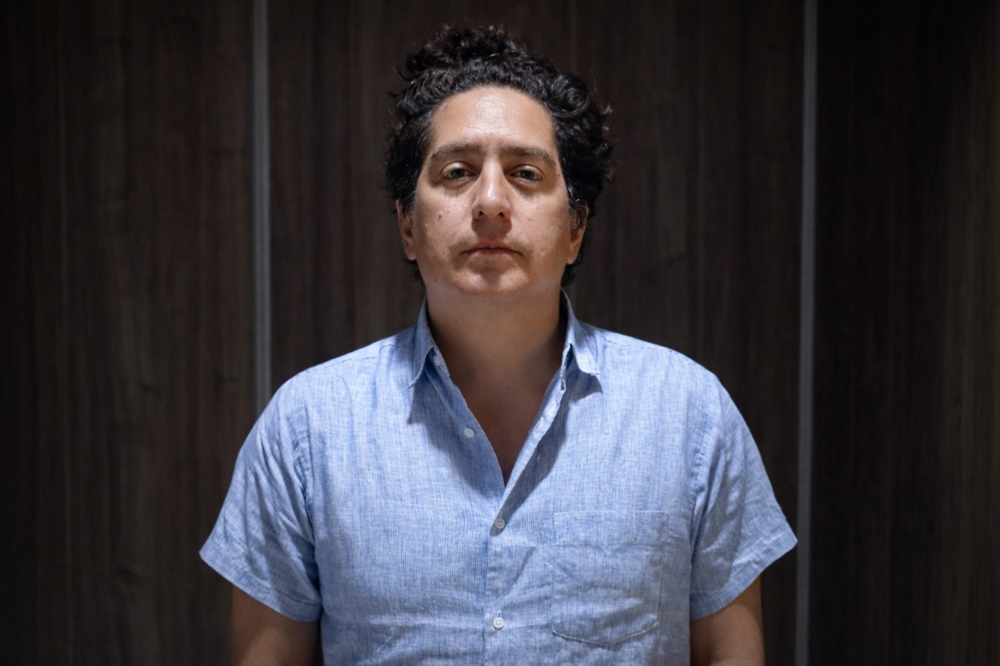

Daniel Alarcón y la tensión entre contar historias y sostener un medio independiente

En Colombia, el viaje de las audiencias hacia el audio ocurre en medio de una paradoja que los medios conocen bien: el consumo digital crece, pero la confianza en las noticias y la disposición a pagar por información siguen siendo frágiles. Estudios recientes del Reuters Institute for the Study of Journalism muestran que la confianza pública en las noticias es baja y que el pago por contenidos informativos digitales continúa siendo minoritario. Al mismo tiempo, la circulación de noticias depende cada vez más de plataformas como redes sociales y servicios de mensajería, que se consolidan como puertas de entrada a la información.
En ese ecosistema, el podcast aparece como un formato de alcance todavía limitado, aunque con una capacidad singular para construir profundidad y vínculo con la audiencia. Si bien su consumo semanal está lejos del de otros canales y en ningún mercado es la fuente principal de noticias para la mayoría, el audio ha encontrado un espacio propio, no reemplaza la dieta informativa cotidiana, pero la complementa y, en ciertos casos, responde al cansancio que generan los flujos fragmentados y acelerados de información.
Por eso, la discusión de fondo no es únicamente estética —qué tipo de historia funciona mejor en audio—, sino institucional y económica, qué condiciones permiten producir periodismo narrativo de calidad y, sobre todo, sostenerlo en el tiempo. El mismo informe advierte que el mercado mediático colombiano presenta altos niveles de concentración y que la presión combinada de las plataformas de streaming y la adopción de inteligencia artificial está obligando a las redacciones a innovar en sus modelos editoriales y de negocio. La transformación no responde a una moda tecnológica, sino a un choque estructural entre hábitos de consumo, financiamiento y organización empresarial.
En ese contexto, escuchar a Daniel Alarcón resulta pertinente. Su trayectoria condensa ese tránsito entre vocación narrativa y estructura empresarial, la de convertir la crónica y la ficción en un sistema de producción, edición, verificación y sostenibilidad que hoy es referencia regional. Alarcón es productor ejecutivo y cofundador de Radio Ambulante Studios, productora pionera del periodismo sonoro en español, con programas como Radio Ambulante, El hilo, Central y The Moment. En un momento en que el audio compite con la lógica dominante del video y la fragmentación algorítmica, su experiencia permite analizar cómo se cuentan historias y cómo se construyen medios independientes capaces de perdurar.
Para empezar, ¿cómo te presentas hoy? ¿Quién es Daniel Alarcón cuando tiene que resumir su trayectoria en pocas líneas?
Soy peruano-estadounidense. Nací en Perú y crecí en Estados Unidos, y lo menciono porque mi carrera ha estado marcada por esa doble pertenencia, un pie en América Latina y un pie en Estados Unidos. Durante muchos años escribí ficción en inglés y, con el tiempo, fui moviéndome hacia la no ficción, primero en prensa escrita, que sigo haciendo, y luego en el mundo del audio y el periodismo sonoro.
Hoy soy productor ejecutivo de Radio Ambulante Studios, donde hacemos varios proyectos, y mi vida profesional terminó siendo una mezcla extraña: escritor, cronista, productor, profesor, y también —sin haberlo planeado— alguien que tiene que tomar decisiones de empresa para que un medio independiente salga adelante.
Ese salto que describes —de escribir novelas a sostener una compañía de medios— suele verse desde afuera como un tránsito “natural” en la era del podcast. Pero tú lo nombras como algo “sin quererlo”. ¿Cómo fue, en la práctica, convertirse en empresario del audio?
No lo he hecho solo. Lo he hecho con mi esposa, con un equipo, con gente que sabe cosas que yo no sabía. Y, aun así, para mí no es una transición natural, porque escribir novelas no te entrena para gestionar presupuestos, negociar alianzas, lidiar con incertidumbre financiera o pensar en estrategias de crecimiento y distribución.
Lo que pasó es que, cuando creamos el proyecto, sentimos un compromiso profundo con el equipo joven que se sumó. Y ahí aparece una realidad: si uno decide ser un medio independiente, el trabajo no es hacer la historia; el trabajo también es sostener las condiciones para que esa historia exista. Mantenerse vivo, en este ambiente económico y mediático, exige riesgo, flexibilidad, aprender rápido y tomar decisiones difíciles. Yo no tengo una maestría en negocios, pero uno aprende caminando.
Tú vienes de la ficción, pero has trabajado durante años con historias reales, testimonios, archivo y verificación. ¿Qué significó el paso de inventar mundos a narrar vidas concretas?
Para mí fue más natural de lo que podría parecer, porque mi ficción siempre tuvo investigación. Yo no escribo autoficción ni escribo sobre mí; lo que me interesa es lo exterior, las vidas de otras personas, que suelen ser más complejas e interesantes que la mía.
En mi primera novela, Radio Ciudad Perdida, hubo meses de investigación con entrevistas, archivo, trabajo en bibliotecas, conversaciones en distintos lugares. Y como era una novela que se alimentaba del conflicto armado en Perú, me encontré con un problema, en algún momento entendí que mucha gente me estaba mintiendo. Lo digo como hecho narrativo y político. Entonces acudí a la ficción para contar una verdad que, en la entrevista directa, en el testimonio, se volvía difícil de fijar.
Cuando dices “me estaban mintiendo”, estás describiendo una tensión clásica del trabajo con memoria reciente, miedo, autocensura, protección. Para entenderlo mejor, ¿cómo era ese Perú en el que tú empezaste a investigar?
Yo comencé esa investigación alrededor de 2000 y 2001, cuando la herida estaba muy fresca. El conflicto interno peruano, sobre todo entre 1980 y 2000, dejó decenas de miles de personas asesinadas o desaparecidas. En los años noventa se capturó a Abimael Guzmán, que era parte central de esa historia, pero en 2001 todavía había focos de violencia y de resistencia armada.
En un contexto así, mucha gente simplifica, omite o distorsiona por autoprotección o por proteger a otros, familia, vecinos, incluso al entrevistador. Y también porque uno llega como “extraño”, la gente no sabe quién es uno ni qué va a hacer con lo que escucha. En ese escenario, la verdad es un territorio movedizo. Y ahí, para mí, la ficción fue un camino para construir una verdad emocional y social que no siempre aparece en una declaración literal.
En tu trabajo narrativo, tanto escrito como sonoro, aparece una pregunta técnica, ¿cómo decides qué escenas entran, qué tono llevar, qué ritmo sostener para que una historia sea comprensible sin perder complejidad?
A mí me enseñaron una regla que, sin ser una ley absoluta, ayuda mucho: cada escena debe tener conflicto o tiene que ser chistosa; ojalá ambas cosas a la vez. Lo importante es que haya una razón para quedarte ahí, para entrar al diálogo, para meterte en la cabeza de alguien. Esa razón es la que avanza la trama, que abre un punto de inflexión, que revela algo que cambia la historia.
Es escribir —o producir, en audio—, mirar si funciona y, si no funciona, cortar sin piedad. Y eso, en periodismo narrativo, es igual de cierto, una historia necesita motor, tensión, energía, incluso cuando está explicando algo complejo. En audio, además, la atención es un bien escaso; compites con todo lo demás que suena en el teléfono de la gente.
En Colombia, el consumo informativo se está moviendo hacia redes y video, y el podcast de noticias sigue siendo pequeño en alcance. ¿Qué te dice ese dato sobre el tipo de escucha que podemos construir en la región?
Me parece importante no confundir tamaño con valor. El podcast de noticias es un nicho en muchos países, y aun en mercados donde es más grande, sigue siendo complementario. Eso lo vuelve un formato con una relación distinta con la audiencia.
Nosotros trabajamos en español, y ahí hay otra capa. Hay latinos en Estados Unidos que hablan español y otros que no lo hablan, pero lo entienden; hay gente bilingüe, hay gente que usa estos programas para reconectarse con un país de origen familiar, o para sentirse cerca de una región que conocen por fragmentos. Esa audiencia es internacional, intergeneracional, y tiene muchas puertas de entrada.
Y, sobre todo, hay algo que defendemos, el respeto por la diversidad de acentos, vocabularios, contextos y formas de hablar. Lo que nos fascina de América Latina es que no es una sola cosa. Aun así, una buena historia, bien contada, logra cruzar fronteras culturales. Nosotros no pensamos “esta historia es para tal grupo”; pensamos, “esta es una buena historia”. Y luego la audiencia, con su entusiasmo, hace el resto, la comparte, la recomienda, la lleva a otras comunidades.
Esa diversidad que defiendes también tiene una consecuencia técnica, no todas las comunidades cuentan igual, no todo el mundo se expresa con el mismo código narrativo. ¿Qué retos trae eso para el periodismo sonoro?
Hay una dificultad real que yo llamo, medio en broma, la tiranía del que habla bien. Y no me refiero a “hablar bien” según la gramática o la norma de la Real Academia Española. Me refiero a que hay culturas donde la oralidad está muy entrenada: gente muy chistosa, muy rápida, con una manera de narrar que engancha de inmediato. Si uno se deja llevar por eso, termina contando siempre los mismos lugares y perfiles, porque es más fácil producirlos y porque “funcionan” en términos de escucha.
Pero si tu meta es narrar la región, tienes que encontrar maneras de incorporar voces que no vienen con ese entrenamiento cultural del cuentacuentos. Y eso es trabajo editorial, paciencia, acompañamiento, estructura, y también creatividad en producción para que la historia sea potente sin forzar a la persona a ser algo que no es.
Cuando se habla del legado de proyectos como los tuyos, suele ponerse el foco en “impacto” cultural. Tú, sin embargo, te detienes en otra palabra, “sobrevivir”. ¿Qué has aprendido de ese equilibrio entre impacto y sostenibilidad?
Para mí son dos cosas inseparables. Una, obviamente, es el impacto, que se vuelva una referencia, que influya en cómo se hace periodismo narrativo en audio, que la gente lo cite, que lo discuta, que le sirva. Eso, si ocurre, es un legado cultural.
Pero ese legado depende de lo otro. Si no sobrevives como empresa, si no consigues sostener la estructura, entonces el impacto se evapora. Detrás de cada episodio que alguien pone en “play” hay riesgo, hay presupuesto, hay gestión, hay decisiones difíciles. Y también hay algo que no se ve, el compromiso con un equipo y con una comunidad de oyentes que esperan que el proyecto siga existiendo.
Miremos hacia adelante. En tu respuesta anterior aparece la palabra “instituciones”, aunque sea de manera lateral. ¿Qué temas crees que van a marcar la conversación latinoamericana en los próximos años, y qué papel puede jugar el periodismo narrativo ahí?
Yo tengo varias preocupaciones. Una es la relación de Estados Unidos con América Latina. Siento que estamos entrando —o ya entramos— en una etapa más agresiva, más dura, más parecida a un imperialismo antiguo. Lo digo como alguien que también es estadounidense, lo miro con preocupación desde adentro y desde afuera.
Otra es que tenemos muy pocas instituciones regionales fuertes y, además, las conversaciones entre países se han debilitado por la polarización. En ese contexto, el periodismo tiene una tarea importante, no solo denunciar, no solo señalar, sino explicar estructuras, mostrar cómo funcionan —o no funcionan— los Estados, qué capacidades institucionales existen y cuáles no, y qué costos tiene eso para la gente concreta.
Y hay un tema que no podemos ignorar, el deterioro de la democracia en Estados Unidos, que termina afectando a la región entera. Lo que pasa allá repercute en nuestros países y en nuestras instituciones, muchas veces frágiles. Como periodista, uno trata de mirar esas conexiones con calma, sin convertirlo todo en un pleito inmediato, pero con claridad sobre lo que está en juego.
Si aterrizamos esa discusión en coyuntura, estamos en un momento de tensiones y reacomodos entre Bogotá y Washington. En febrero, el presidente Petro habló con Trump sobre una relación “con tensiones, pero convivencia”. ¿Cómo se lee, desde el relato, esa mezcla de choque y dependencia?
Me parece que ahí hay una lección incómoda, podemos sentir indignación, rechazo o miedo frente a ciertas dinámicas, pero igual tenemos que entender cómo se mueven los intereses, cómo se toman decisiones y cómo nos afecta eso en cadena. Y ese trabajo de explicación es, en parte, un trabajo narrativo.
Una buena historia puede mostrar lo que los discursos diplomáticos esconden: quién pierde, quién gana, quién queda por fuera, qué palabras se usan para tapar responsabilidades y qué silencios pesan. Cuando un continente está en tensión, lo fácil es gritar. Lo difícil es explicar.
Para jóvenes que están empezando en podcast o periodismo en audio, ¿qué consejo se sostiene incluso cuando las plataformas cambian?
Yo diría dos cosas que para mí son básicas. Primero, respeta a tu audiencia. No asumas que es tonta, no la trates como un número. Segundo, no te asustes de ir a donde está la audiencia. Si está en Instagram, ve a Instagram; si está en YouTube, ve a YouTube; si está en TikTok, ve a TikTok. Las formas cambian, y uno puede amar el libro físico o la crónica larga, pero eso no significa que sea la única manera válida de narrar.
Lo importante es contar historias con rigor, inteligencia, humanidad, humor, personalidad. Y entender que sobrevivir como narrador hoy implica adaptarte, aunque no sea lo que más te guste.
En esa adaptación, ¿qué historias “todavía” no sabemos contar bien en América Latina? No por falta de voluntad, sino por límites de método, de acceso o de formato.
Yo creo que tenemos un reto grande en dos frentes. Uno es narrar migración sin volvernos repetitivos. La migración es estructural en nuestra región y, a la vez, corre el riesgo de convertirse en un cliché si uno no encuentra nuevas entradas, nuevas preguntas, nuevas formas de escuchar.
Y el otro es narrar ejemplos de democracia en acción, de instituciones funcionando bien, de ciudadanía organizada, no solo los defectos. Si solo contamos el colapso, terminamos confirmando una sensación de impotencia. Mostrar el potencial —cuando existe— también es parte de la responsabilidad de contar el presente.